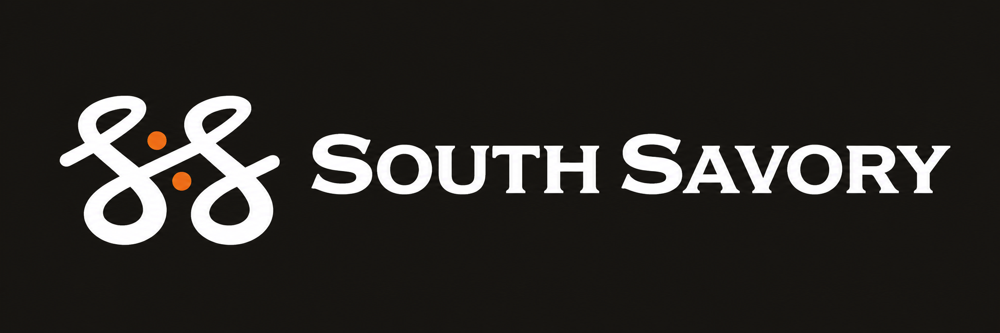

<!doctype html><html lang="en"><meta charset="utf-8"><meta name="viewport" content="width=device-width,initial-scale=1"><title>South Savory · Logo kit</title><style>*{box-sizing:border-box}body{margin:0;background:#f1eee7;color:#171613;font:16px/1.5 Georgia,serif}main{max-width:1200px;margin:auto;padding:48px 28px}header{display:flex;align-items:baseline;justify-content:space-between;border-bottom:1px solid #ccc5b9;padding-bottom:20px}h1{font-size:34px;margin:0}header span{font:12px Arial,sans-serif;letter-spacing:2px}.grid{display:grid;grid-template-columns:1fr 1fr;gap:24px;margin-top:28px}figure{margin:0;background:#fff;padding:28px;border-radius:4px}figure img{display:block;width:100%;height:230px;object-fit:contain}figcaption{border-top:1px solid #eee;padding-top:16px;margin-top:20px}b{font:600 15px Arial,sans-serif}small{display:block;margin-top:5px;color:#6d675f;font:13px/1.5 Arial,sans-serif}.dark{background:#171613;color:white}.dark img{height:230px}.dark figcaption{border-color:#3c3934}.dark small{color:#c3bdb2}footer{margin-top:28px;font:13px/1.6 Arial,sans-serif;color:#6d675f}@media(max-width:700px){.grid{grid-template-columns:1fr}header{display:block}header span{display:block;margin-top:8px}}</style><main><header><h1>South Savory</h1><span>REFINED LOGO FAMILY · V1</span></header><div class="grid"><figure><figcaption><b>01 · Primary logo</b><small>Menu covers · Packaging layouts · Brand introductions</small></figcaption></figure><figure><figcaption><b>02 · Horizontal logo</b><small>Website headers · Letterheads · Wide labels</small></figcaption></figure><figure><figcaption><b>03 · SS monogram</b><small>Social profiles · Stickers · Small brand accents</small></figcaption></figure><figure class="dark"><figcaption><b>04 · Dark banner</b><small>Digital banners · Presentation covers · Background included</small></figcaption></figure></div><footer>Three transparent PNGs and one charcoal-backed banner. Raster concepts; a vector redraw is needed for large-format production. See README.md for use and file details.</footer></main></html>